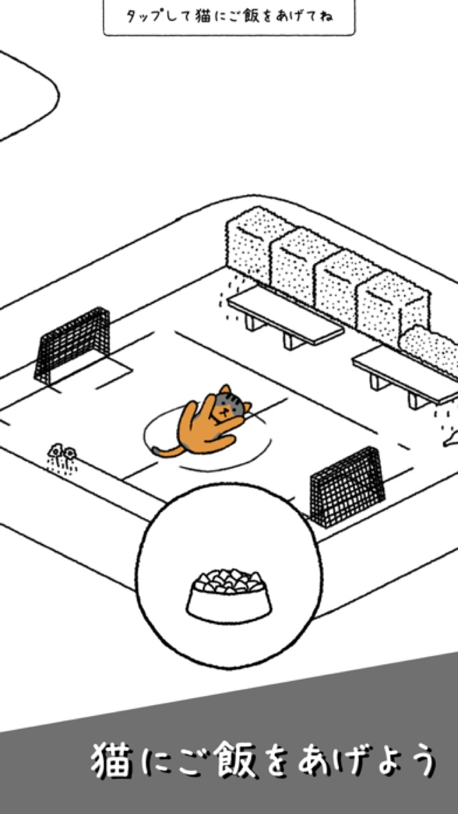
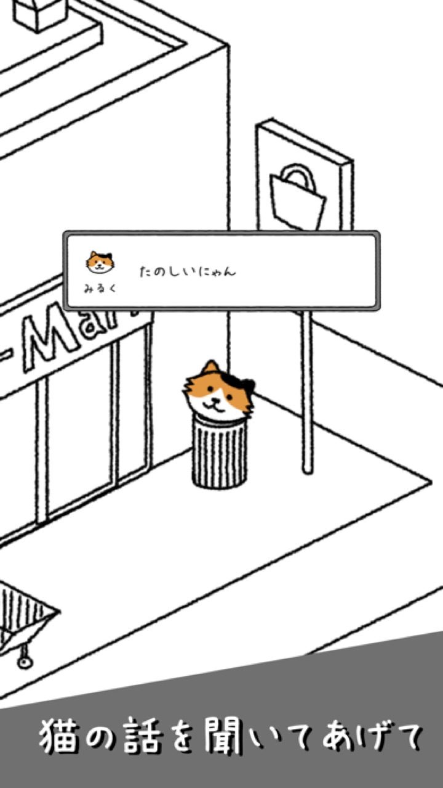
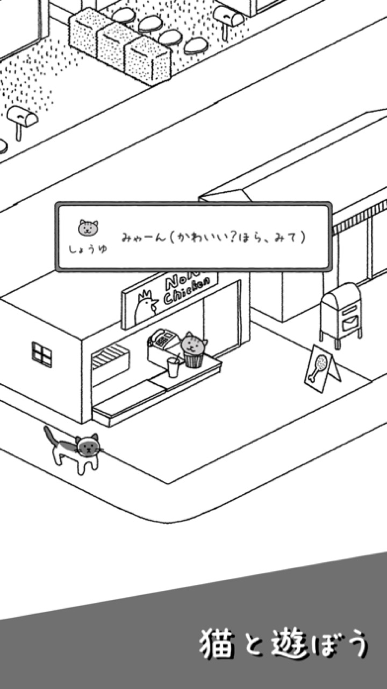

★4.9
App Store評価


ねこを60匹以上集めて、自分だけの村を育てる癒やしの放置ゲーム


★4.9 · レビュー71,000+ · 累計10M+ DL · since 2018
 ココミ ♥
ココミ ♥ はる ♥
はる ♥



チケットでガチャを引いて新しいねこと出会おう。ノーマル・レア・エピック、顔もクセもみんな違う。レベルアップのたびに聞ける、ねこたちのひとことがこのゲームの真骨頂。

建物が自動でお魚を作ってくれます。1日数分、ごはんをあげてハートを集めるだけで村が育つ。広告は見たいときだけ — 強制はありません。

手描きのインクの線でできた村で、色を持つのはねこだけ。建物を育てて、すみずみまで自分好みに飾ろう。
App Storeに実際に投稿された声

"タイトル通り、ねこが本当に可愛くて癒やされます。 操作も簡単で、仕事や勉強の合間に少しずつ進められるのが良いです。"

"かわいい猫とのびのびあそべてたのしいです。"

"本当にかわいい癒される"
2018年から、小さなインディースタジオがこつこつと


iOS & Android 無料